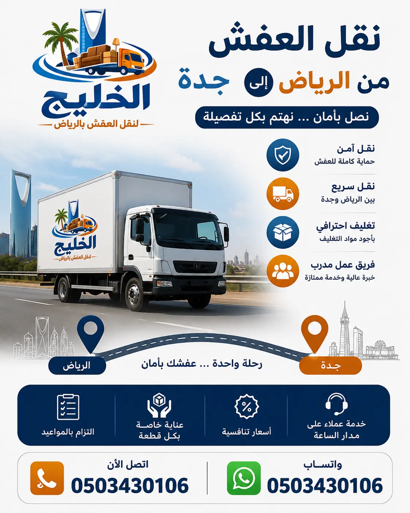

نقدم أفضل خدمة نقل عفش من الرياض إلى جدة بأسعار تنافسية تبدأ من 2000 ريال. شركة نقل عفش الرياض التي تثق بها آلاف العائلات والشركات. سيارات نقل مجهزة وفريق محترف لضمان سلامة أثاثك.
إذا كنت تبحث عن شركة نقل عفش من الرياض إلى جدة موثوقة ومتخصصة في النقل بين المدن، فإن شركة الخليج لنقل العفش هي خيارك الأمثل. نحن نقدم خدمات نقل الأثاث من الرياض إلى جدة بأعلى مستويات الاحترافية والتميز. سواء كنت تنقل منزلاً صغيراً أو فيلا كبيرة، فإن لدينا الإمكانيات والخبرات اللازمة. تبدأ أسعار نقل العفش من الرياض إلى جدة من 2000 ريال فقط، وتختلف حسب حجم الأثاث وكميته ونوعه. أفضل شركة نقل عفش بالرياض تقدم لك خدمة متكاملة تشمل فك وتركيب الأثاث، تغليف احترافي، والنقل الآمن عبر الطرق السريعة. فريقنا المدرب يصل إلى منزلك في الرياض في الوقت المحدد، ويقوم بتحميل الأثاث بعناية فائقة باستخدام أحدث المعدات، ثم يتوجه إلى جدة لتفريغ الأثاث وتركيبه في منزلك الجديد. لا تتردد في الاتصال بنا للحصول على عرض سعر فوري ومجاني. نقل العفش بالرياض هو تخصصنا، ونفخر بتقديم خدمة متميزة تناسب جميع العملاء.
تعتبر سيارات نقل العفش من الرياض إلى جدة التي نوفرها من أكبر وأحدث السيارات المجهزة بأنظمة تثبيت متطورة، وأحزمة ربط قوية لمنع تحرك الأثاث أثناء السير لمسافات طويلة. كما نحرص على أن تكون سياراتنا نظيفة ومعقمة قبل كل عملية نقل. أرخص شركة نقل عفش بالرياض تقدم أعلى مستويات الجودة لعملائها. نحن ندرك أن نقل العفش بين المدن يحتاج إلى تخطيط دقيق، لذا نوفر لكم خدمة منظمة تبدأ من التغليف الاحترافي باستخدام أفضل مواد تغليف الأثاث وصولاً إلى إعادة التركيب في منزلك الجديد بجدة. اتصل بنا اليوم على 0503430106 واحصل على خصم خاص للانتقال بين المدن.

شركة نقل عفش من الرياض إلى جدة التي تبحث عنها ليست مجرد شركة تنقل الأثاث، بل هي شريك موثوق في رحلة انتقالك بين المدن. في شركة الخليج، ندرك أن نقل العفش بين الرياض وجدة يتطلب تخطيطاً دقيقاً وفريقاً محترفاً يمكنه التعامل مع جميع التحديات التي قد تطرأ على الطريق السريع. نحن نقدم حلولاً شاملة لنقل الأثاث من الرياض إلى جدة، سواء كنت تنقل منزلاً صغيراً أو فيلا كبيرة أو مكتباً تجارياً. نحرص على تقديم خدمة متميزة تبدأ من التقييم المجاني للأثاث وانتهاءً بإعادة تركيبه في منزلك الجديد بجدة. فريقنا من الفنيين والنجارين والعمالة المدربة لديه القدرة على فك وتركيب جميع أنواع الأثاث بأسلوب احترافي يحافظ على سلامته. نستخدم أحدث أدوات الفك والتركيب، ونعتمد على أساليب متطورة في التغليف باستخدام أفضل الخامات مثل الفوم والاسترتش والكراتين السميكة، لضمان حماية أثاثك من الخدوش والكسور والصدمات أثناء النقل لمسافات طويلة. كما نتميز بأسطول حديث من دينات وشاحنات نقل الأثاث المجهزة بأنظمة تثبيت حديثة ورافعات هيدروليكية تسهل عملية التحميل والتنزيل، مما يضمن وصول أثاثك إلى جدة بكل أمان وسلامة.
اختيار شركة متخصصة مثل الخليج لنقل العفش من الرياض إلى جدة يضمن لك تجربة نقل خالية من التوتر، حيث نتعامل مع كل قطعة من أثاثك وكأنها قطعة فنية ثمينة، ونعمل على تقديم خدمة تتجاوز توقعاتك بأقل التكاليف الممكنة وبأعلى مستويات الجودة. شركة نقل أثاث بالرياض المحترفة تقدم لك ضمانات على سلامة منقولاتك، وهو ما لا توفره شركات النقل العادية. نحن نقدم خدمة نقل العفش بين المدن في جميع أيام الأسبوع، مع إمكانية النقل في أوقات تناسبك. كما نقدم خدمة نقل الأثاث الثقيل والضخم باستخدام الرافعات الهيدروليكية والونش، لنضمن رفع وتنزيل الأثاث بأمان دون إجهاد أو إلحاق ضرر بالمباني. أفضل شركات نقل العفش بالرياض تضع شركتنا في المرتبة الأولى بفضل خدماتنا المتكاملة وأسعارنا التنافسية. ثقتكم هي هدفنا، ورضاكم هو غايتنا.
عند البحث عن أفضل شركة نقل عفش الرياض جدة، تبرز شركة الخليج كخيار مثالي يلبي جميع احتياجات العملاء. فما الذي يجعل شركة نقل عفش هي الأفضل في النقل بين المدن؟ إنه مزيج من الخبرة الطويلة، والكفاءة العالية، والأسعار التنافسية، والالتزام بالجودة. نحن في الخليج نتفوق على منافسينا من خلال تقديم خدمات متكاملة تشمل كل ما تحتاجه من فك وتركيب وتغليف ونقل الأثاث بين الرياض وجدة، كل ذلك تحت سقف واحد وبرأس مال بشري مدرب على أعلى مستوى. أفضلية شركتنا تأتي من كوننا نمتلك فريقاً متخصصاً يمتلك المهارات اللازمة للتعامل مع الأثاث بجميع أنواعه وأشكاله، سواء كان أثاثاً منزلياً فاخراً أو أثاثاً مكتبياً معقداً. نحن نضمن لك نقل أثاثك من الرياض إلى جدة دون أي خدوش أو أضرار، وذلك بفضل استخدامنا لأحدث تقنيات التغليف والحماية، بما في ذلك البطاطين المخصصة، والاسترتش الشفاف، والفوم عالي الكثافة، والكراتين المقواة. بالإضافة إلى ذلك، نقدم أسعاراً تنافسية تجعلنا الخيار الأول للعديد من العملاء، حيث نحرص على تقديم عروض وخصومات تناسب جميع الميزانيات، مع الحفاظ على جودة الخدمة المقدمة.
خدمة العملاء لدينا متاحة على مدار الساعة لتلقي استفساراتكم وحجوزاتكم، وفريقنا جاهز للوصول إليكم في أي وقت لمعاينة الأثاث وتقديم عرض سعر فوري ودقيق. ثقة عملائنا هي دليلنا على التميز، لذا نحرص دائماً على بناء علاقات طويلة الأمد مبنية على المصداقية والشفافية والالتزام بكافة معايير السلامة والأمان في عمليات النقل. الفرق بين شركات النقل المحترفة والعادية واضح، ونحن نضع أنفسنا دائماً في فئة المحترفين. نقدم أيضاً خدمات فك وتركيب الأثاث لجميع أنواع الأثاث، ونقل عفش مع تركيب مكيفات للعملاء الذين يحتاجون إلى نقل أنظمة التكييف. أفضل شركة نقل عفش الرياض تنتظر اتصالك لخدمة انتقالك إلى جدة. اتصل بنا اليوم على 0503430106.
خدمة نقل عفش من الرياض إلى جدة التي نقدمها ليست مجرد توفير سيارة نقل، بل حزمة متكاملة تشمل فك وتركيب الأثاث، تغليف الأثاث، ونقل الأغراض بأمان لمسافات طويلة. يمكنك الاعتماد علينا لنقل جميع أنواع الأثاث: غرف النوم، المجالس، المطابخ، الأجهزة الكهربائية، والأثاث المكتبي. نتعامل مع الأجهزة الإلكترونية الحساسة مثل التلفزيونات والثلاجات باستخدام صناديق مخصصة مزودة بطبقات عازلة للصدمات. نقل عفش مع تركيب مكيفات هي خدمة متخصصة نقدمها للعملاء الذين يحتاجون إلى نقل أنظمة التكييف. بالإضافة إلى ذلك، نقدم خدمات تخزين الأثاث في الرياض للعملاء الذين يحتاجون إلى تخزين مؤقت لأثاثهم قبل الانتقال إلى جدة. دليل شركات نقل العفش بالرياض يضعنا في المرتبة الأولى بفضل جودة خدماتنا الشاملة. نحن نقدم أيضاً خدمة أفضل طرق تغليف الأثاث لضمان وصول جميع أغراضك بحالة ممتازة إلى جدة.
نحن نؤمن بأن نقل العفش بين المدن يجب أن يكون تجربة خالية من التوتر، لذلك نقدم خدمات إضافية مثل نصائح مهمة قبل نقل العفش لتسهيل العملية. كما نقدم كيفية حماية الأثاث أثناء النقل لتكون على دراية كاملة بخطواتنا. أفضل شركة نقل عفش الرياض تقدم لك خدمة متكاملة تشمل جميع احتياجات انتقالك إلى جدة. نقدم أيضاً خدمة نقل عفش رخيص للعملاء الذين يبحثون عن أسعار مناسبة دون المساس بالجودة. فريقنا المدرب يصل إلى منزلك في الرياض في الوقت المحدد، ويقوم بتحميل الأثاث بعناية فائقة باستخدام أحدث المعدات. لا تتردد في الاتصال بنا للحصول على عرض سعر فوري ومجاني.
تغليف العفش هو خطوة حاسمة لضمان سلامة أثاثك أثناء النقل
لمسافات طويلة من الرياض إلى جدة. نحن في شركة الخليج نولي أهمية قصوى لعملية التغليف، حيث نستخدم
أفضل خامات التغليف المتوفرة في السوق لحماية أثاثك من الغبار، والخدوش، والصدمات، والرطوبة. تشمل
مواد التغليف لد�
تقدم شركة الخليج لنقل العفش خدماتها المتكاملة من الفك والتركيب والتغليف والنقل والشحن في
كافة أحياء ومناطق العاصمة الرياض وإلى جدة وباقي مدن المملكة، بأسطول سيارات حديثة وفنيين
مدربين. انقر على الحي للوصول للتفاصيل:
خدمات نقل العفش في جميع أحياء الرياض
والمدن
أحياء شمال الرياض
فك وتركيب الأثاث هو جوهر خدمتنا الذي يميزنا عن غيرها من شركات النقل. ليس كل من يحمل الأثاث يمكنه فكه وتركيبه بشكل صحيح، ولكن فريقنا من النجارين والفنيين المحترفين يمتلك المهارة والخبرة للتعامل مع جميع أنواع الأثاث، بدءاً من غرف النوم البسيطة وصولاً إلى المطابخ المعقدة والمجالس العربية المطعمة. نستخدم أدوات متخصصة لتفكيك كل قطعة أثاث بطريقة منظمة، حيث نقوم بتفكيك الأجزاء الكبيرة إلى أجزاء أصغر لتسهيل حملها ونقلها، مع الاحتفاظ بجميع البراغي والمسامير والأجزاء الصغيرة في أكياس مميزة وواضحة، ونقوم بتوثيق عملية الفك بالصور لضمان إعادة التركيب بدقة. عند الوصول إلى منزلك الجديد في جدة، نقوم بإعادة تركيب الأثاث حسب التصميم المطلوب مع مراعاة تثبيته بشكل آمن ومستقر. تشمل خدمتنا فك وتركيب جميع أنواع الأثاث مثل غرف النوم، والمطابخ، والمجالس، والمكاتب، والخزائن، والأسرة، والأريكة، والطاولات، والكراسي، وحتى الأثاث الزجاجي والرخامي. نتعامل مع كافة الماركات العالمية مثل ايكيا، ونقدم ضماناً على جودة الفك والتركيب، حيث نضمن عدم حدوث أي تلف أو كسر في الأثاث أثناء عمليات الفك أو التركيب.
نحن ندرك أن الأثاث الفاخر يحتاج إلى عناية خاصة أثناء الفك والتركيب، خاصة عند النقل بين المدن. تركيب أثاث ايكيا هو أحد تخصصاتنا، حيث لدينا خبرة في التعامل مع جميع قطع ايكيا. كما نقدم خدمة فك وتركيب غرف النوم بأنواعها المختلفة. فريقنا من النجارين يعمل بدقة واحترافية لضمان تركيب الأثاث بشكل صحيح وآمن. خدمة فك وتركيب الأثاث متاحة كجزء من باقة النقل أو كخدمة منفصلة حسب رغبتك. اتصل بنا اليوم لتحصل على أفضل خدمة فك وتركيب لأثاثك.
عملية نقل العفش من الرياض إلى جدة مع شركة الخليج منظمة على مراحل لضمان نقل سلس وآمن. الخطوة الأولى: الاتصال بنا على 0503430106 أو عبر الواتساب لتحديد موعد المعاينة المجانية. الخطوة الثانية: يزور فريقنا منزلك في الرياض لتقييم كمية الأثاث وتحديد السيارة المناسبة وعدد العمال. الخطوة الثالثة: نرسل عرض سعر نهائي وشفاف. الخطوة الرابعة: نقوم بفك الأثاث وتغليفه باستخدام أفضل مواد التغليف لحمايته أثناء الرحلة الطويلة. الخطوة الخامسة: تحميل الأثاث في السيارة وتثبيته بشكل آمن باستخدام أحزمة خاصة. الخطوة السادسة: الانطلاق إلى جدة مع سائقين مدربين على القيادة الآمنة لمسافات طويلة. الخطوة السابعة: الوصول إلى جدة وتفريغ الأثاث وإعادة تركيبه في منزلك الجديد حسب رغبتك. هذه الخطوات تجعلنا أفضل شركات نقل العفش بالرياض للعملاء الذين ينتقلون إلى جدة. ننصح بقراءة أخطاء شائعة عند نقل العفش لتتجنبها ولتتعرف على أهمية الاعتماد على شركة محترفة لنقل عفشك.
نحن ندرك أن نقل العفش بين المدن قد يكون مرهقاً، لذلك نقدم لك نصائح مهمة قبل نقل العفش لتسهيل العملية. كما نقدم خدمة كيفية حماية الأثاث أثناء النقل لتكون على دراية كاملة بخطواتنا. نقدم أيضاً أفضل شركة تخزين أثاث بالرياض للعملاء الذين يحتاجون إلى تخزين مؤقت لأثاثهم قبل الانتقال. تعرف على تفاصيل أسعار نقل العفش في الرياض من خلال موقعنا. اتصل بنا اليوم لتحصل على أفضل خدمة نقل عفش من الرياض إلى جدة.
نحن نخدم جميع أحياء الرياض بأسطولنا من سيارات نقل العفش. تشمل قائمة الأحياء التي نغطيها: حي العليا، حي الخليج، حي النرجس، حي الياسمين، حي الروضة، حي النسيم، حي الربيع، حي القيروان، حي حطين، حي الملقا، حي الصحافة، حي العارض، حي إشبيلية، وحي الرمال. بفضل انتشارنا الواسع، نستطيع الوصول إلى أي منزل في الرياض خلال أقل من ساعة. دليل أحياء الرياض لنقل العفش يساعدك في التعرف على المناطق التي نخدمها بتفاصيل أكثر. كما نخدم جميع مناطق جدة عند الوصول، ونضمن تسليم أثاثك إلى أي حي في جدة.
| نوع الخدمة | السعر (ريال) | ملاحظات |
|---|---|---|
| نقل شقة غرفة نوم (الرياض إلى جدة) | 2000 - 3500 | سعر ثابت شامل التغليف |
| نقل شقة غرفتين (الرياض إلى جدة) | 3500 - 5500 | يشمل عمالة للتحميل |
| نقل فيلا صغيرة (الرياض إلى جدة) | 6000 - 10000 | حسب عدد الغرف والأثاث |
| نقل فيلا كبيرة (الرياض إلى جدة) | 12000 - 20000+ | خدمات خاصة وفريق مميز |
| فك وتركيب أثاث إضافي | 400 - 1200 | فريق نجارة متخصص |
| تغليف احترافي (لكل غرفة) | 200 - 500 | فوم وبطاطين واسترتش |
| نقل مكيفات (فك وتركيب) | 300 - 800 | حسب عدد المكيفات |
| تخزين أثاث شهري | 300 - 1000 | مستودعات آمنة ومكيفة |
تختلف أسعار نقل العفش من الرياض إلى جدة حسب عدة عوامل: حجم الأثاث وكميته، عدد الغرف، نوع الأثاث (ثقيل أو عادي)، والخدمات الإضافية مثل التغليف، الفك والتركيب، ونقل المكيفات. نحن نقدم أفضل الأسعار التنافسية دون المساس بالجودة. تعرف على تفاصيل أسعار نقل العفش في الرياض من خلال موقعنا. كما نقدم عروضاً خاصة وخصومات للعائلات والطلاب والعملاء الدائمين. اتصل بنا لتحصل على عرض سعر دقيق ومجاني لنقل عفشك من الرياض إلى جدة.
نفخر بثقة عملائنا الذين جربوا خدماتنا في نقل العفش من الرياض إلى جدة. إليكم بعض آرائهم:
"أفضل شركة نقل عفش من الرياض إلى جدة. تعاملت معهم لنقل عفش منزلي من حي النرجس إلى جدة. كان الفريق محترفاً جداً، والأثاث وصل سليماً دون أي خدش. أنصح الجميع بالتعامل معهم."
— الأستاذ عبدالله
"نقلت عفشي من الرياض إلى جدة مع شركة الخليج. الأسعار منافسة جداً، والعمالة مدربة على فك وتركيب الأثاث. شكراً لكم على الخدمة الممتازة."
— السيدة نورة
"تعاملت مع أكثر من شركة نقل، لكن شركة الخليج كانت الأفضل في نقل عفشي من الرياض إلى جدة. الالتزام بالمواعيد، النظافة، وسرعة الإنجاز. سأستمر في التعامل معهم."
— المهندس فيصل
"خدمة نقل عفش من الرياض إلى جدة متميزة. قاموا بنقل جميع أغراضي من الرياض إلى جدة بأمان. الأثاث وصل بحالة ممتازة. شكراً للفريق المحترف."
— الدكتور سامي
يمكنكم قراءة المزيد من آراء العملاء على مدونتنا أو زيارة صفحتنا على نقل الأثاث بالرياض للاطلاع على تجارب أخرى.
هناك عدة أسباب تجعل شركة الخليج لنقل العفش هي الخيار الأفضل لخدمة نقل العفش من الرياض إلى جدة. أولاً: خبرة تمتد لأكثر من 15 عاماً في نقل الأثاث بين المدن. ثانياً: أسطول حديث من السيارات المجهزة بأنظمة تثبيت متطورة لحماية الأثاث أثناء السفر لمسافات طويلة. ثالثاً: فريق مدرب على التعامل مع جميع أنواع الأثاث. رابعاً: أسعار تنافسية تبدأ من 2000 ريال للشقة الصغيرة. خامساً: ضمان شامل على سلامة الأثاث. سادساً: خدمة 24 ساعة طوال أيام الأسبوع مع إمكانية النقل في أي وقت. سابعاً: تغطية جميع أحياء الرياض وجدة. ثامناً: نقدم خدمات إضافية مثل نقل فلل وتخزين الأثاث. دليل شركات نقل العفش بالرياض يضعنا في المرتبة الأولى بفضل جودة خدماتنا. أفضل شركة نقل عفش الرياض تنتظر اتصالك لخدمة انتقالك إلى جدة. نقدم أيضاً أرخص شركة نقل عفش بالرياض مع ضمان الجودة العالية. شركة نقل أثاث بالرياض التي تثق بها العائلات والشركات.
نقدم خدمات نقل العفش والأثاث وتفكيك وتركيب المكيفات في كافة مناطق ومدن وأحياء الرياض وجدة. اختر منطقتك أو حيك السكني للوصول إلى الخدمة المخصصة:
تبدأ أسعار نقل العفش من الرياض إلى جدة من 2000 ريال للشقة الصغيرة، وتصل إلى 20000 ريال للفلل الكبيرة. تفاصيل الأسعار
نعم، لدينا فريق متخصص في فك وتركيب الأثاث لجميع أنواع الأثاث أثناء النقل بين الرياض وجدة.
نستخدم تغليف احترافي وسيارات مجهزة بأنظمة تثبيت حديثة لحماية الأثاث أثناء الرحلة الطويلة.
نعم، لدينا فنيون متخصصون في فك وتركيب المكيفات أثناء النقل.
نعم، نوفر تخزين الأثاث في الرياض للعملاء الذين يحتاجون إلى تخزين مؤقت.
تستغرق رحلة النقل من 10 إلى 12 ساعة حسب حركة المرور وحجم الأثاث.
جميع عمالنا مدربون على نقل الأثاث لمسافات طويلة ولديهم خبرة سنوات في هذا المجال.
نعم، نخدم جميع أحياء الرياض وجدة. دليل أحياء الرياض
نقدم ضماناً شاملاً على سلامة الأثاث من الكسر والتلف أثناء النقل.
نعم، نوفر خدمة نقل العفش على مدار الساعة، بما في ذلك الليل وعطلات نهاية الأسبوع.
تحدد الأسعار بناءً على حجم الأثاث وكميته، المسافة، والخدمات الإضافية.
نعم، نستخدم أفضل مواد تغليف الأثاث المناسبة للسفر لمسافات طويلة.
اتصل بنا على 0503430106 أو راسلنا عبر الواتساب، وسنرسل لك عرض سعر فوري ومجاني.
نعم، لدينا سجل حافل في نقل العفش بين الرياض وجدة والمدن الأخرى. أفضل شركات نقل العفش بالرياض
بفضل خبرتنا الطويلة، فريقنا المدرب، أسطولنا الحديث، وأسعارنا التنافسية. أفضل شركة نقل عفش الرياض
فريقنا جاهز لخدمتك على مدار الساعة. اتصل الآن وتمتع بعرض خاص للانتقال بين المدن.
اتصل بنا 0503430106